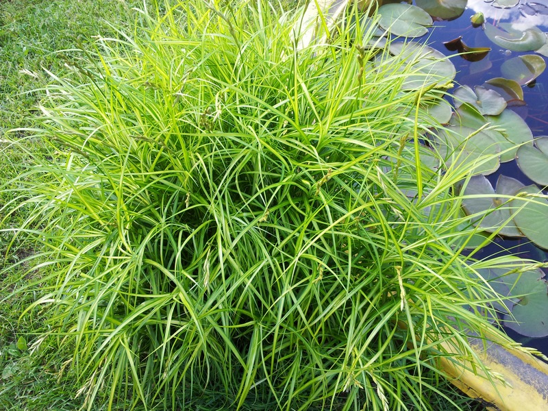

Пихта высокорослая
30 EU
0.7m
Очень красивое, небольшое дерево, часто неправильной формы. К 30 годам может набрать 8 м высоты. Хвоя длинная, мягкая, серебристо-синяя. С раннего возраста может давать шишки, которые в начале роста зеленые, а затем пурпурные.
Ель восточная
25 EU
0.5m
Совершенно необыкновенная елка. Ветки располагаются так, что можно рассмотреть каждую хвоинку.Взрослая хвоя гладкая, блестящая, как восковая. Сорт очень компактный, медленно растет.
Ель канадская
10 EU
0.2m
Карликовый шарик, у которого со временем вытягивается верхушка и получается чалма. Хвоя плотная, зеленая, колючая. Растет медленно. Прирост за год 2-3см. Неприхотлива.
Ель колючая
15 EU
0.4m
Все внимание весной достанется ей за яркую, необычную окраску. Летом она утратит лидерство, но крупная иголка и необычная крона всегда будут привлекать внимание.
Ель обыкновенная
5 EU
0.2 - 0.3m
Эта малышка универсальна благодаря своему малому размеру. Идеально будет себя чувствовать в альпинарии среди камней, в клумбе среди низких многолетников ее место на переднем плане. Роскошна в бордюре, в композициях с шарами. Зимует отлично.
Ель Энгельмана
15 EU
0.8m
Красивая, правильная форма. Растущие веточки красиво поникают. Хвоя голубая. Неприхотлива, но не любит пересушивания. К 30 годам около 7м.
Black Prinsess
40 EU
0.15m
Одна из самых дорогих в мире нимфей. Очень насыщенный цвет, обильное цветение, быстро разрастается. Глубина посадки 07-1,0м.
Fire Opal
13 EU
0.01m
Очень красивый, густо-махровый цветок. Лист зеленый. Глубина посадки около 0,8-1,0м.
Gregg's Orange Beauty
30 EU
0.15m
Это очень эффектная нимфея. Лист бордовый с черным крапом, цветок розовый, переходящий в нежно-желтый. Глубина посадки 0,5-0,8 м.

Вереск
3 EU
0.3m
Идеальное растение в композициях с хвойными растениями и рододендронами. Насыщенная зелень летом, а осенью полностью покрываются нежными цветами.
Купальница китайская
1 EU
0.4m
Кустистый многолетник высотой до 70 см. Листья большие пятиразрезанные. Цветок сложный, крупный оранжевый в июле. Солнечное, влажное место.
Чистец Монье
3 EU
0.3m
Красивая, плотная, зеленая кочка. Лист жатый, удлиненный, гладкий сверху и бархатный снизу. Высокие цветоносы с розовыми цветами все лето букетом возвышаются над листьями. Для жарких, сухих мест. Неприхотлива и морозостойка.

Чистец шерстистый
1 EU
0.3m
Другое название "овечьи ушки". Разрастается быстро. Лист серо-белого цвета, с обильным опушеним. Цветоносы красивы когда поднимаются, потом можно срезать, чтобы сохранить плотную куртину. Сухое место и полное солнце.

Жимолость
4 EU
1.5m
Цветет в начале лета желтыми цветами. Полутенистое место, свежие, не кислые почвы.
Жимолость приморская
5 EU
0,9m
Среднерослая лиана. Цветет почти весь сезон бежево-красными цветами, листья сизые с синевой. Не требовательна к почве, морозостойкая.
Перистощетинник лисохвостный
3 EU
0,5m
Этот перистощетинник выше и больше предыдущего. Пышная, красивая кочка широких, темно-зеленых листьев. Рыже-коричневое соцветие до 20 см длины. Высота куста во время цветения около 1,0 м.

Осока пальмолистная
2 EU
0,5m
Листья зеленые с продольными желтыми полосами, расположены почти под прямым углом к побегу. Колоски желтого цвета высота до 60 см.